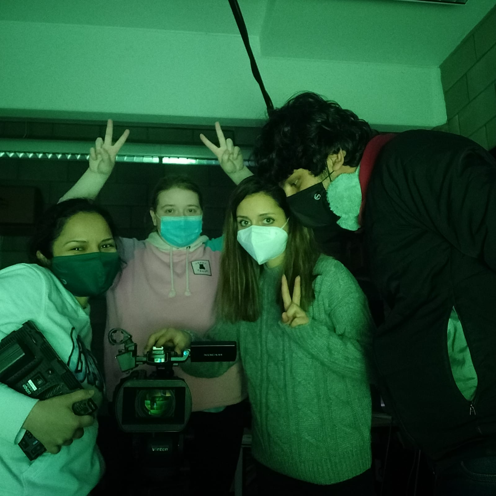

I am proud to be a part of this wonderful team with Laura, Alice and Carla, where we came together to brainstorm, storyboard our ideas and eventually made an product video for the JBL speaker lamp! We touched various bases on this assignment,from story boarding to script writing to the video-making aspect that dealt with getting the logistics ready and shoot in a Green room, followed by the editing process where we had mixed audio and video,also worked on tools like, Adobe After Effects, Adobe Premire Pro, and eventually Audacity for mixing the audio with some prior hand-on experience from the audio story came a long way this time. Please enjoy the video below!
It indeed feels great to have worked as a team in producing this high quality video! When I look back at the days we worked together as a team, I feel immensely proud of us!
